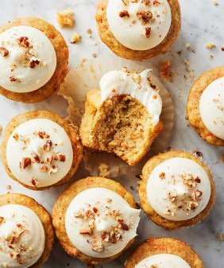

The Little Kitchen
A family food blog with easy, well tasted, family approved recipes!
Dessert Ideas

- Oatmeal Cookies
- Healthy Banana Muffins
- Pumpkin Bars
Ingredients :
- ¼ cup ground flaxseed
- ¼ cup plus 2 tablespoons warm water
- ¾ cup all-purpose flour
- ¾ cup almond flour
- 1 tablespoon pumpkin pie spice
- 2 teaspoons baking powder
- ½ teaspoon baking soda
- ½ teaspoon sea salt
- 1 cup canned pumpkin puree
- 2 tablespoons melted coconut oil
- ⅓ cup maple syrup
- 1 teaspoon vanilla extract
Instructions :
- Preheat the oven to 350°F and lightly grease an 8x8-inch baking dish.
- In a small bowl, combine the flaxseed and the water and set aside for 5 minutes to thicken.
- In a large bowl, combine the all-purpose flour, almond flour, pumpkin pie spice, baking powder, baking soda, and salt.
- In a medium bowl, whisk together the pumpkin, coconut oil, maple syrup, vanilla, and the flaxseed mixture.
- Pour the wet ingredients into the bowl of dry ingredients and stir until just combined. Spread into the baking dish (the batter will be thick) and bake for 25 to 30 minutes or until a toothpick comes out clean. Let the cake cool completely before frosting or slicing.
- While the cake cools, make the frosting: In a large bowl, beat the cream cheese and butter with an electric mixer until smooth. Add the vanilla and powdered sugar, and mix until smooth.